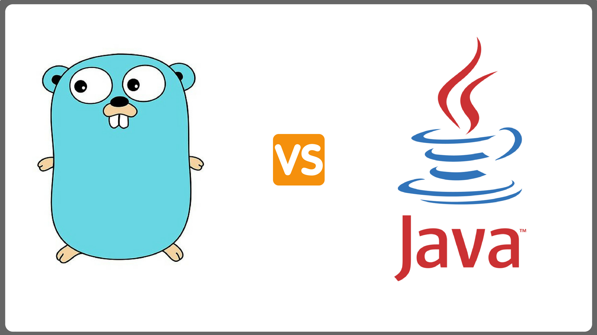

转载请注明出处：https://www.cnblogs.com/funnyzpc/p/10801474.html
go
go提供了range关键字可以循环各种切片和数组，同时也提供了多参，这点相比较java会灵活不少，
另外switch循环也不同与java，默认仅进入匹配的case内不会往下循环，若需要往下循环需要用到
fallthrough关键字，这个也确实有利于开发，不用像java一样写break结束。
func main() {
arr := []string{"a", "b", "c"}
for val := range arr {
fmt.Println(arr[val])
}
for i := 0; i < 10; i++ {
fmt.Println(i)
}
caseVal := "C"
switch caseVal {
case "A":
fmt.Println("This is A")
case "B":
fmt.Println("This is B")
case "C":
fmt.Println("This is C")
default:
fmt.Println("This is other word!")
}
}java
java 提供了多种循环，分别是for、foreach、Stream foreach(java8提供)，while、do while
switch ，我就直接展示代码吧。
@Test
public void forTest(){
String[] arr = new String[]{"A","B","C"};
for (String item:arr) {
LOG.info(item);
}
for(int i=0;i<arr.length;i++){
LOG.info(arr[i]);
}
String word = "B";
switch (word){
case "A":
LOG.info("This is A");
break;
case "B":
LOG.info("This is B");
break;
case "C":
LOG.info("This is C");
break;
default:
LOG.info("This is Other word!");
}
}go
go提供了多参返回，当参数较少当时候可以一次性返回，不用构造结构体返回
func main() {
a, b, c, err := process(11, "A", true)
fmt.Println(a, b, c, err)
}
func process(aa int32, bb string, cc bool) (int32, string, bool, error) {
var ccReturn bool
if true == cc {
ccReturn = false
} else {
ccReturn = true
}
return aa + 1, bb + "_return", ccReturn, nil
}
java
java并没有提供多参返回，若要实现多参返回，一般将返回参数封装入Map、List 这类集合类型中，
或者构造一个新对象放入返回值后返回。
@Test
public void returnObjec(){
Map<String,Object> result = this.processObj();
LOG.info(new JSONObject(result).toString());
}
public Map<String,Object> processObj(){
return new HashMap<String,Object>(){{
put("val1",true);
put("val2","str");
put("val3",999777L);
}};
}go
首先 defer 和 finally 大多用于资源关闭或异常处理
go中的defer 与 java的finally个人感觉是相似的，但是如果将defer放入到循环内的话可就像
一个反向队列了，若一个处理逻辑内有多个defer的时候 先defer的晚于后defer,很有意思，大家可以试试哈～
func main() {
doSomething()
}
func doSomething() {
fmt.Println("something start")
defer fmt.Println("something defer")
fmt.Println("something end")
arr := []string{"a", "b", "c"}
for val := range arr {
defer fmt.Println(val)
}
}
java
java 的finally 大多用于异常处理，尤其是文件流异常处理，同时也不存在类似于defer的倒序处理，
这里就给个简单的例子～
@Test
public void processFinal(){
String[] arr = new String[]{"A","B"};
try{
LOG.info(arr[2]);
}catch (Exception e){
LOG.info("异常了：{}",e);
}finally {
LOG.info("最后进入～");
}
}go
go不存在默认构造函数，但是提供了init函数；我一开始也想不起来go的init函数如何与java的初始化
对比，灵机一动就有了无参的构造函数，虽然这样对比其实并不恰当，但是功能上是有相似的地方。另外需要
说明的是go的init的函数是在包被引入的时候调用的 若与main函数存在同一代码块 也是init先被调用，
而java的默认构造函数仅在对象被new的时候调用的。
func main() {
fmt.Println("func main()")
}
func init() {
fmt.Println("func init()")
}
java
java的默认构造方法其实并不常用，但是在每启一个类的时候都有默认的构造方法，若是定义了就会走默认的构造
方法，若无则在编译为class文件的时候自动为所在类加入一个。
public class ConstructTest {
private static final Logger LOG = LoggerFactory.getLogger(ConstructTest.class);
@Test
public void processConst(){
LOG.info(">>> start");
Person person = new Person();
LOG.info(">>> end");
}
}
class Person{
private static final Logger logger = LoggerFactory.getLogger(Person.class);
private String name;
private Integer age;
public Person() {
logger.info("default Constructor");
}
public String getName() {
return name;
}
public void setName(String name) {
this.name = name;
}
public Integer getAge() {
return age;
}
public void setAge(Integer age) {
this.age = age;
}
}go
go的静态(也可叫静态常量，主要用于基本数据类型)，使用关键字const指定。
使用const定义的静态变量是不可用修改或赋值的。
const name int = 11
const (
a = "hello"
b = true
c = 99
)
func main() {
fmt.Println(name)
fmt.Println(a)
fmt.Println(b)
fmt.Println(c)
}
java
java的常量需要用两个关键字修饰 static 和 final ,前者表示静态的意思，但这个静态是可以被修改的，
修改的前提是类型不变，而第二个关键字表示最终的意思，一旦变量被这个关键字修饰则不可重新修改变量。
但是对于复合对象，比如List、Map、自定义对象等，又是可以被修改的,对于这点个人觉得 java 的常量的定义
并不够严谨。
public class staticFinalTest {
private static final Logger LOG = LoggerFactory.getLogger(staticFinalTest.class);
private static final String name = "Tom";
private static String item = "first item";
private static final List<String> initArr = new ArrayList<String>(){{
add("A");
add("B");
add("C");
}};
@Test
public void process(){
LOG.info(name);
item = "youth!";
LOG.info(item);
initArr.add("hello");
LOG.info(initArr.toString());
}
}
go
go 的方法或参数需要被外部访问，需要使用大写开头参数名或函数名(go文件大小写是与与否与是否私有无关)
// 可被文件外函数访问
var Name string = "John"
func main() {
fmt.Println(Name)
Process()
}
// 可被文件外函数调用
func Process() {
fmt.Println("Process()")
}
java
java的参数或方法属性不同于go，大致分为三类：
public class ObjectTypeTest {
private static final Logger LOG = LoggerFactory.getLogger(ObjectTypeTest.class);
//私有访问（仅可同一类中）
private String name1 = "name01";
// 保护访问（仅可同一包内）
protected String name2 = "name01";
// 公共访问 (任何类均可访问)
public String name3 = "name01";
@Test
public void process(){
LOG.info(this.doSomeThing());
LOG.info(name1);
LOG.info(name2);
LOG.info(name3);
}
public String doSomeThing(){
return "hello";
}
}